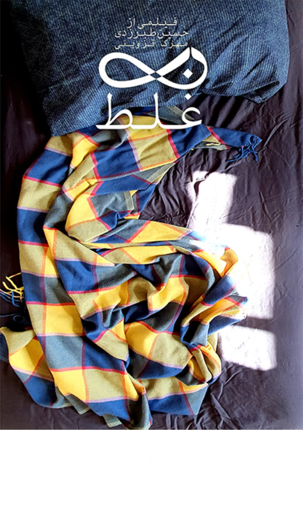
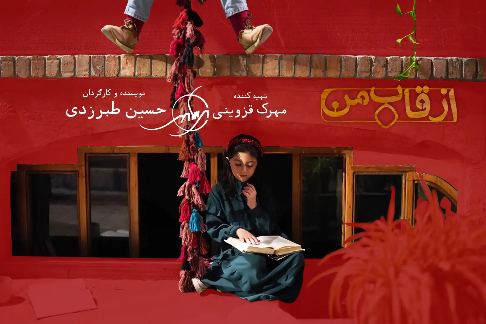
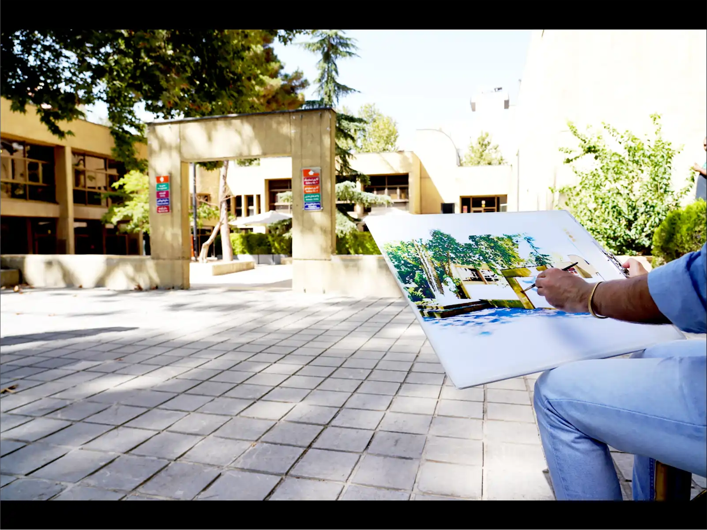

اید ه ی از قاب من از کجا آمد؟
ک روز، حسین طبرزدی برای من (مهرک قزوینی) تعریف کرد که یه خواب عجیب دیده. خواب دیده بود که آدمهایی که میشناسدشون دور یک میز نشسته اند و سر موضوع ارث و میراث در حال جدلند و حسین با یه هندی کمِ روی سهپایه میخواد ازشون فیلم بگیره اما وقتی تو ویزور نگاه میکنه، بچگی اون آدما رو میبینه! ما کلی راجع به این ایده و اینکه چرا اصلا آدم باید بخواد به کودکیش برگرده گپ زدیم و رفته رفته دوربین تبدیل به “قاب” شد. قابی که رو صحنه قرار میگیره و دختری که آواز خوندن آرزوشه، پشتش میایسته و بچه میشه و میتونه رو صحنه بخونه.
حسین مشغول تدوین یه ویدیو شد و من نشستم و یه فیلمنامه سه صفحه ای نوشتم از اون دختر و برادرش که بعد از پایان اجرا و ایستادن پشت قاب، می فهمه که اجرای خواهرش رو روی صحنه دیده بوده. حسین فیلمنامه رو دوست داشت اما از همون اول طی کرد باهام که یه چیزایی بهش اضافه کنه. قرار شد یه فیلم جدید بسازیم و هردومون خیلی خوشحال بودیم.
پیش تولید "از قاب من" آغاز شد
حسین کمی فیلمنامه رو تغیر داد و با هم شروع به کشیدن استوری بورد و فلورپلن کردیم. تصویرها برامون جذاب شدن و از ساختن این فیلمنامه مطمئن شدیم. دلمون میخواست بازیگر جوونی داشته باشیم که بتونه بخونه. بهترین گزینه شاگردای اشکان خطیبی بودن. با فرناز زُهری، دستیار آقای خطیبی صحبت کردیم و فرناز با مهربانی، چند بازیگر جوان رو بهمون معرفی کرد و ما از همشون تست گرفتیم و در نهایت، رایا رمضانی رو انتخاب کردیم. رایا هم برای نقش رفیق شفیق کاراکتر سَروین، نورا پیدایش رو معرفی کرد. برای برادر سروین از لحظه نوشتن، به کوروش اشراقی فکر می کردم که ویدیویی برای صفحه رفتن بهمون داده بود و حسش در ذهنم حک شده بود. کوروش هم اومد و تمرینها آغاز شدند. سه ماه، رایا هر روز و باقی بچهها هفتهای دو روز با حسین تمرین می کردن.
من برای لوکیشن به سالن بزرگ فرهنگسرای نیاوران عزیزم فکر می کردم و حسین برای تغیراتی که در فیلمنامه داده بود، در فکر سالن کوچکی بود. فرهنگسرای نیاوران هردو را داشت به علاوه آینه کاری زیبای ورودی سالن، اثر منیر فرمانفرمایان که ایدهی حسین در کنارش جون میگرفت و معماری بینظیر کامران دیبا که هردو عاشقش بودیم. نشستیم وسط محوطه و سروینِ قصهمون رو دیدیم که از قاب ورودی، از روی حوض، رد میشه و میره تا به آرزوش برسه.
رفتیم تو کودکی سروین و بعد کودکی حسین و بعد “قصه های اردو” که حسین تو ده سالگی بازی کرده بود و بهمن دادفر که حسین همیشه ازش تعریف میکرد که دستیار بوده تو قصه های اردو و کلی حس و خاطره خوب برای حسین کوچک درست کرده بود. با بهمن تماس گرفتیم و او ما رو رسوند به مرتضی هدایی، فیلمبردار درجه یک سینما که قصههای اردو، اولین کارش بوده و حسین؛ هم عاشق کارش بود و هم برای همون تصویر خوب بچگیش، خیلی دوست داشت که حالا که فیلمساز شده، باهاش کار کنه. مرتضی هدایی، برای منی که نمی شناختمش، تجسم یه آدم حرفه ای، کاردرست و متواضع بود. حسین رو در اولین تماس شناخت. راجع به کارمون شنید. با وجود مشغله زیادش، باهامون قرار گذاشت. باهامون حرف زد و باهامون همراه شد.
برای هر سکانس فیلم، یکی از کارای ماکان اشگواری رو انتخاب کردیم. آهنگ ها با روایتمون هم قدم شدن و از ماکان اجازه گرفتیم برای گذاشتن کارهاش روی فیلممون. با مهربانی و روی گشاده پذیرفت. فیلم کوتاهمون، موزیکال شده بود و من خیلی هیجان زده بودم. حسین دوستش داشت اما دلایل محکم تری برای این حجم آواز می خواست.
خواستنِ فرهنگسرای نیاوران برای لوکیشن، ما رو تو مسیر عجیبی قرار داد که اولیش آشنایی با انسان شریفی به اسم علیرضا حیدرزاده بود. آدمی که با تمام وجودش، هرکاری از دستش برمیومد میکرد. بعد هم آقای همراه، که با پایبندی شایان تقدیرش به قانون، ما رو فرستاد دنبال مجوز ساخت فیلم کوتاهمون در وزارت ارشاد تا بتونه بهمون مجوز فیلمبرداری تو فرهنگسرا رو بده.

پیش تولید "از قاب من" موقتا متوقف شد
فیلمنامه “از قاب من” زیر بغلمون بود و عشق به فرهنگسرای نیاوران تو دلمون و مطمئن از کارمون رفتیم تا وزارت ارشاد، بالای میدون بهارستان. جایی که من، تو سال های دانشجویی و بعدش برای دیدن استاد راهنمای باسواد و دلسوزم، آقای فرج نازنین، با شوق میرفتم و با شوقی چندبرابر برمیگشتم و حالا ظاهرا قانونش عوض شده بود؛ یا ما بزرگ شده بودیم و سدها بزرگ شده بودن. ما ماه ها به دنبال مجوزمون رفتیم و بارها فیلمنامه رو عوض کردیم و اسم کاراکترمون رو عوض کردیم و از یه جایی، تمرین ها رو متوقف کردیم. چیزی که از این چندماه به یادگار برای خودم نگه میدارم، مدل راه حل پیدا کردن های حسینه. حسین می گفت: الان اینو گفتن… بیا ببینیم باید چی کارش کنیم…
و خسته نشدیم. رفتیم و آمدیم و بالاخره، مجوز “از قاب من” رو گرفتیم.
به تولید "از قاب من" نزدیک می شویم
با بازیگرها دوباره قرار تمرین گذاشتیم. فایل های استوری بورد و فلورپلن رو دوباره باز کردیم تا با فیلمنامه جدید تطبیق بدیم. خیلی چیزها عوض شده بودند. از تمام آهنگ ها، اجرای ماکان از “گنجشک من” ثمین باغچه بان رو نگه داشتیم.کوشا علیمحمدی و وحید دادمهر که دوستای حسین بودن و سینما براشون جذاب بود و تو شروع کار دستیار حسین بودن، برنگشتن. علی معالی نیا، رفیق و همکلاسی کارنامه با همه دقت و شوقش، دستیار حسین شد. ری را الطافیِ بازیگر با دوستی و مهر، منشی صحنه کار شد.
فیلمنامه رو تغیر داده بودن و لایه های پیچیده ذهن حسین رو خطی کرده بودن. از حریر ذهنمون دوتا نقش به دنیا اومدن که دوتا رفیقِ از جنس حریر رو نشوندن کنارمون. لوریمر کوک تپه و نورآرش چارلی بازهم اومدن.
“طنینِ” قصه مون، زیرِ زمین رفته بود. استاد بی همتامون، فرهاد توحیدی، امکان فیلمبرداری در خانه اردیبهشت عودلاجان زیبا، که یادگار دوره صفویه بود و زیرزمین و ایوون دلچسبی داشت رو برامون فراهم کرد. مهندس بهروز مرباغی که این خونه رو به زیبایی مرمت کرده و مدیر داخلی اونجا خانم مهندس پریناز کوهستانی، با آغوش باز ما رو پذیرفتند.
مرتضی هدایی درگیر سریال شده بود و هیچ جور وقتمون به هم جور نمی شد. او پیش از این، برای پروژه “صدای خرگوش” هم، سام سلیمانی که “ترین”، کنار همه خوبی هاش می شینه رو بهمون معرفی کرده بود و ما خیالمون راحت بود از داشتن فیلمبردار خوش فکر و حرفه ایمون.
با هادی معنوی پورِ آروم و صبور، چند هفته قبل، صدای خرگوش رو کار کرده بودیم. کمی بعدش، فیلم کوتاه بی نظیرش رو دیده بودیم و می دونستیم که با احمد تفرشی میاد و بهترین و با کیفیت ترین صدا رو می گیره.
هادی برای نقش طنین کوچک، نورا حنیفه زاده رو معرفی کرد که همراه مادرش اومد، به حرفامون با دقت گوش کرد، با نکته سنجی تمام سوال کرد و دلمون رو برد. دل تو دلم نبود که مادرش رو نگاه کرد و با سر بهش گفت که بازی می کنه تو کارمون و کیف کردیم من و حسین از لحظه لحظه کار باهاش و لحظه ای نبود که تحت تاثیر هوش، تسلط و تمرکزش رو کار، استعدادش و اخلاق حرفهاش قرار نگیریم.
ما در حلقه دوستان حرفه ایمون با خیال راحت تو دو روز، فیلم کوتاه “از قاب من” رو فیلمبرداری کردیم و تدوینش رو به پویان شعله ور سپردیم و حالا برای صداگذاری، دست رامین ابولصدق کاردرسته و البته که راهی طولانی در پیش داره…